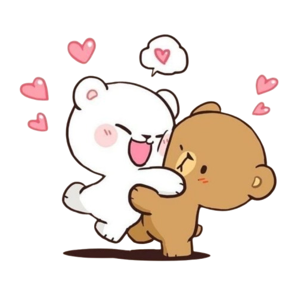
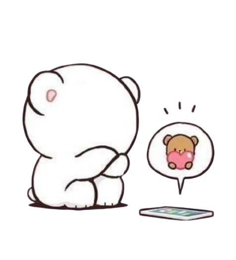
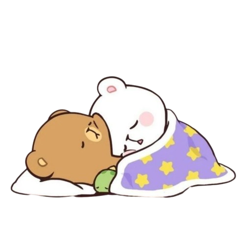
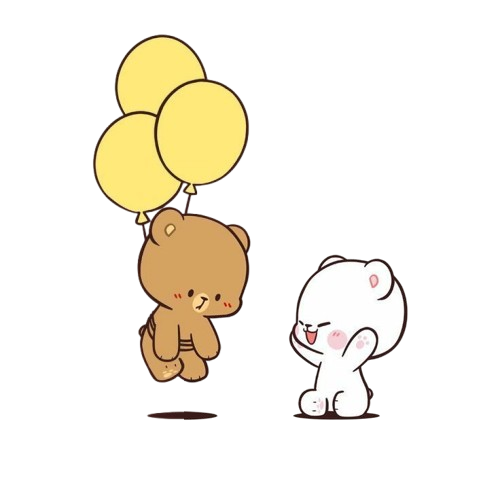
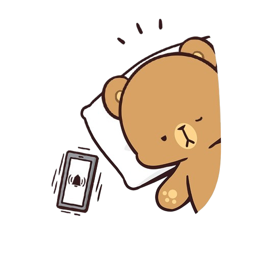
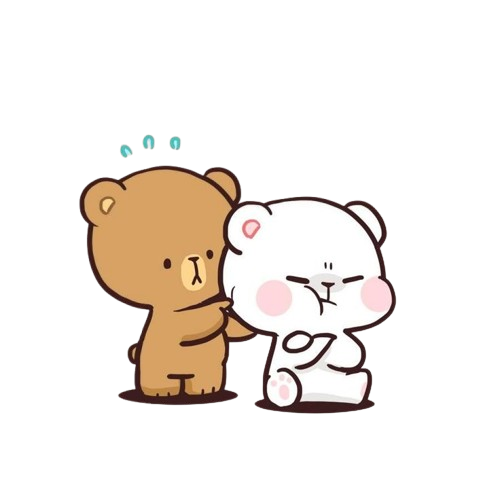
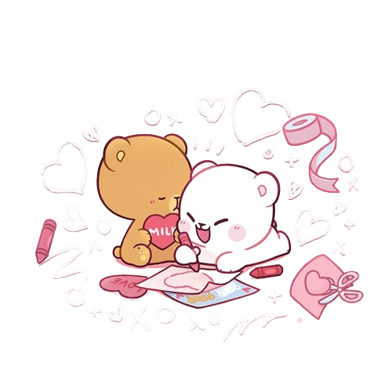

Aumente o volume e aperte o coração para começar 🎶
.
.
.
.
Role para baixo...
Saudade sua ☹️
Eu passo a maior parte do meu dia pensando em você. A saudade bate como se nunca tivesse ido embora. E, mesmo agora, ainda consigo sentir o teu cheiro, lembrar da sua voz, da sua risada, como se você estivesse aqui do meu lado.

Te ver triste me destrói 🥺
O que mais me dói é lembrar que às vezes você chorava e eu não estava lá para enxugar. Ver você sofrendo me causava sofrimento também, por mais que eu não deixasse transparecer.

Você era minha paz 🕊️
Na bagunça que é o mundo, com todas as dificuldades da vida, teu abraço era onde tudo fazia sentido para mim. Quando eu estava com você, mesmo sem falar nada, eu estava em paz. E acho que isso é amor de verdade. Eu sinto falta disso mais do que de tudo.
Noites que ainda vivem em mim 🌙
Cada noite contigo virou lembrança que me visita quando deito a cabeça no travesseiro. Você ainda mora aqui. E me arrependo de todas as vezes que você me chamou para dormir junto, e eu escolhi ir para o computador, mesmo que fosse para estudar ou adiantar alguma coisa. Deixei de viver momentos de verdade com você por coisas que, no fim, nem eram tão importantes.

Eu faria tudo por você 🎈
Se eu precisasse voar pelos céus, me amarrar em balões e cruzar o mundo só para te ver sorrir de novo, eu faria sem pensar. E mesmo isso ainda seria pouco perto do que eu sinto. Eu daria a minha vida por você.

Primeira coisa do meu dia 📲
Eu ainda abro o celular procurando notificação com seu nome. Seu bom dia era o combustível para começar o meu dia bem. Lembro das nossas trocas de figurinhas, principalmente dos macaquinhos, a gente amava isso. E eu ainda guardo cada uma delas.

Brigas não apagam o que sinto ❤️
A gente teve brigas? Sim. E foram muitas, a maioria sem sentido… e isso é o que mais me machuca: não ter tido maturidade para lidar com elas. Mas mesmo com tudo, eu nunca deixei de te amar, nem por um segundo. Nem quando doía. Principalmente quando doía.

Se eu pudesse voltar no tempo ⏳
Eu trocaria tudo para voltar naquele dia, na Americanas do shopping Pantanal, quando te vi pela primeira vez. Eu faria tudo diferente.

"Amar não é encontrar alguém para viver, é encontrar alguém com quem não se pode viver sem."
— Rafael Garcia
Eu desisto de tentar desistir. 💘
Cada linha de código deste site foi feita com muito amor e carinho.